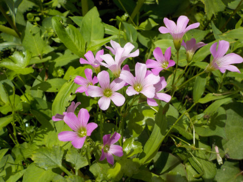
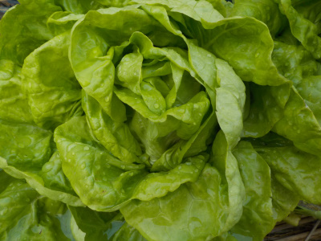
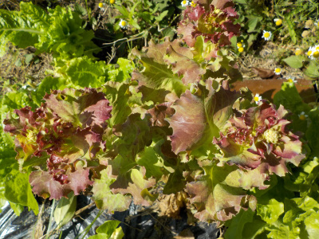
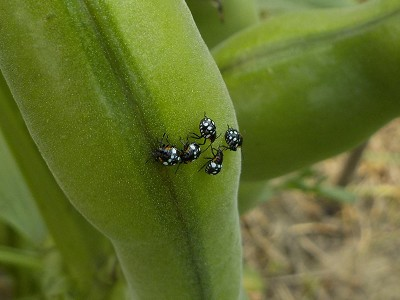
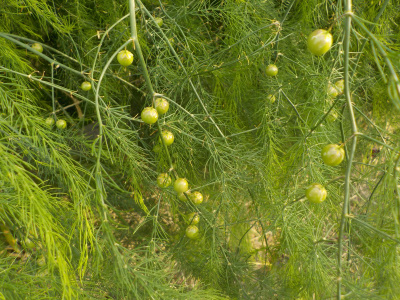
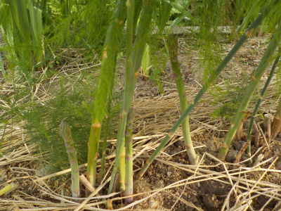
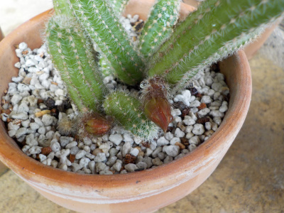

遊びで植物を育てよう
2019/06/23
フリージアの球根を掘りました。
枯れた葉っぱの下を掘って球根を採りました。

花の大きさの割には球根が小さいですね。
しばらく保管です。
【6月TOP】
【日記TOP】
【園芸TOP】
2019/06/23
カタバミっていつも咲いていればいいのに。
ピンクの花がとっても目立ってました。

普通に綺麗。
普段から咲いてれば花壇にあってもよさそうですが。あったらあったで邪魔かな。
種落ちてドンドン増えるもんな。
【6月TOP】
【日記TOP】
【園芸TOP】
2019/06/16
サラダ菜が大量収穫中。
サラダ菜はクセがないのでいっぱい食べれます。

沢山収穫しても問題ないです。
マヨネーズで食べるのが好きかな。
【6月TOP】
【日記TOP】
【園芸TOP】
2019/06/09
サニーレタスが不味くなりました。
レタスの葉っぱの色が薄くなり、表面のツヤがなくなっています。

こうなったレタスは苦くて不味いです。
もう食べません。勝手に花でも咲かせてください。
【6月TOP】
【日記TOP】
【園芸TOP】
2019/06/02
そら豆に見慣れない虫。
ちっちゃくてちょっとキラキラした虫が集まってました。

何か野菜に悪いことをしてそうです。
調べたらソラマメゾウムシっぽいです。そら豆に産卵するつもりですね。
【6月TOP】
【日記TOP】
【園芸TOP】
2019/06/02
アスパラに実が出来ていました。
アスパラガスがうっそうと茂っています。

この実は放置でいいのかな。

種に栄養を取られるとかあるのかな。
でも種をむしり取るのは面倒。
【6月TOP】
【日記TOP】
【園芸TOP】
2019/06/02
サボテンに蕾がありました。
今迄ちゃんと管理していなかったので花が咲いてた記憶がないです。

花が咲くんですね。
このサボテンはビャクダンって名前のようです。
【6月TOP】
【日記TOP】
【園芸TOP】
過去の日記
【2024年6月の日記】
【2023年6月の日記】
【2022年6月の日記】
【2021年6月の日記】
【2020年6月の日記】
【2019年6月の日記】
【2018年6月の日記】
【2017年6月の日記】
【2016年6月の日記】
【2015年6月の日記】
【2014年6月の日記】
【2013年6月の日記】
【2012年6月の日記】
【6月TOP】
【日記TOP】
【園芸TOP】
畑仕事じゃないよ。
【おいしいものを食べよう。】【しっかり寝よう。】
【ソロ活をしよう!】【季節感のあることをしよう。】【動画視聴はほどほどに。】【当サイトの全てのコンテンツは無断転載禁止です。】